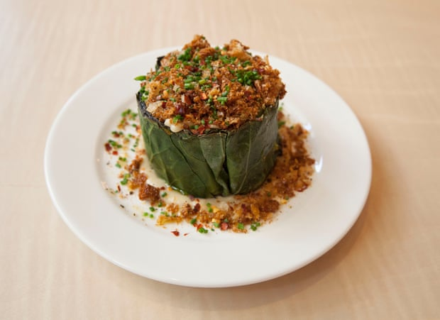
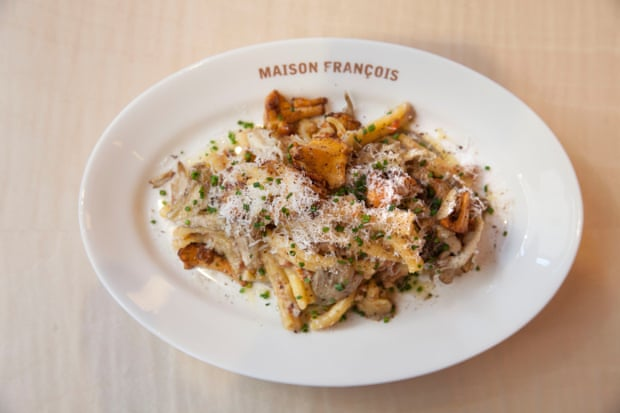
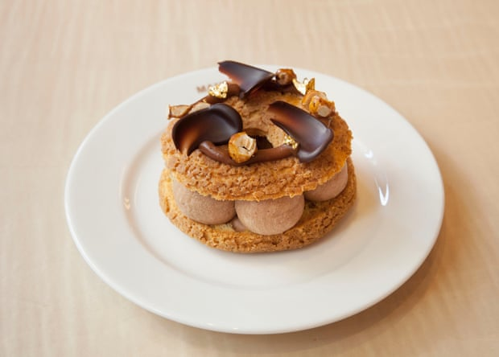
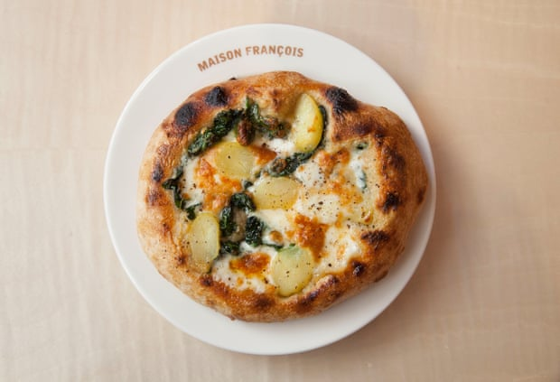
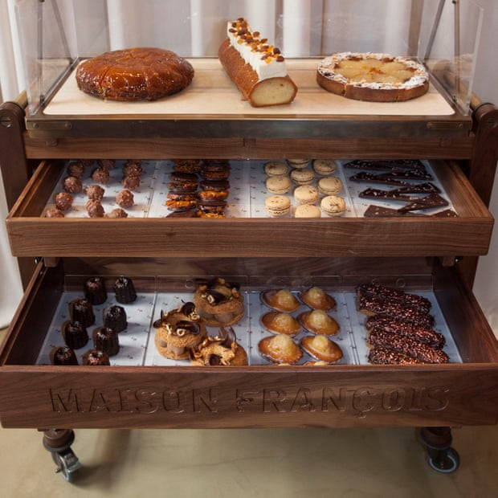

Maison François is a new, Gallic-style, all-day brasserie close to Piccadilly Circus. In a godforsaken world, this feels like good news – or at least it does to me, because I consider the French all-day brasserie to be one of the high points of modern civilisation. It doesn’t live by earthly time constraints or dress codes; you can pitch up whenever, looking elegant or dishevelled. You can order a pichet of burgundy at 11am and the staff will treat you as if you’re Brigitte Bardot in 1973, taking a breather from feeding donkeys at La Madrague. The menu isbgenerally vast, often flappy, laminated and will contain celeriac remoulade, four types of fatty spud and a decent paris-brest. I wish they’d made more of brasseries in the Tricolore 1 textbook, rather than its arduous passages on babyfoot table football son et lumière.
Opening any sort of restaurant in central London right now is like willingly putting your head into a lion’s cage and hoping it might merely rearrange your fringe. Maison François has more of a fighting chance than most: Matthew Ryle, an ex-MasterChef 2018 finalist, is chef, having trained at the Dorchester and then worked at Isabel; the founder is the affable François O’Neill, formerly of Brompton Bar & Grill; and the rather brilliant Ed Wyand, ex of Scott’s and then Clapton’s Verden, is front of house.
In fact, there are traces of all these aforementioned restaurants at Maison François. Service throughout is well-drilled and observant, the wine list sweeps you around 250 vineyards, and the basement bar, Frank’s, is so low-key deluxe, I’ve been in two minds about telling anyone that I’ve got it pencilled in as a place to go full Antoinette and sit out the current woes with a glass of white burgundy, a plate of 32-month-aged comté, some radishes and a bowl of cervelle de canut.
Or perhaps I’ll just lurk in one of the corners of the restaurant, where the staff will determinedly sabotage your plans for washboard abs with their multi-drawered pudding trolley featuring shelves full of chocolate eclairs, tarte tatin, canelés and macarons. This is a trick that could spark joy in the saddest heart. I mean, come on: they trundle a sort of ever-giving box of sweet treats to you, brimming with fresh madeleines, rum baba and frangipane tart, all baked in-house. It is impossible not to grin foolishly. This, after all, is a restaurant’s chief role right now: offering brief, intense, shallow, but thoroughly welcome moments of minor magic. I’d swap six and a half days staring at news reports for the good three minutes when Maison François rolled that trolley up to me and my friend Courtney, and we threw back our heads and laughed.
So, long story short: Maison François is a good shout if you’re braving the West End. The food is generously, memorably seasoned, and oil-, butter- or garlic-drenched. A humble flatbread, sitting inconspicuously at the top of the menu, arrives laden with melted taleggio, wilted spinach and soft potato. I have similar warm memories of a plate of soft cabbage, sweet with an anchoïade sauce and encrusted with breadcrumbs and chilli. A thick, porky, homespun slice of paté en croute maison arrived with crisp cornichons in their own wooden pot. There were two types of pasta: a wildly decadent, sunset-yellow ravioli du dauphin stuffed with comte, and fresh strozzapreti matched half and half with a ragout of Toulouse sausage and chanterelles.
The menu also boasts entrecôte de boeuf, poulet rôti and côte de porc with sauce moutarde, and even john dory with pig’s trotter, but we nibbled instead around the vegetable end of the list. Soft leek vinaigrette came with a neat jacket of bottarga and croutons, lest anyone tries to skip on calories, plus a portion of dark, glossy, multi-layered, architecturally impressive pommes boulangère
It would be possible to eat here many, many times and never order the same thing twice. You might stick to small plates with friends, or do a sturdy, old-school three courses. Yes, Maison François has the definite backbone of classic French cuisine, in the course of a few dishes whisking you around Alsace, off to Lyon and then along to Paris, but there is also a modern, future-facing feel with the likes of red mullet with fennel perched on a punchy, bouillabaisse-style sauce and Instagram-friendly ouef en gelée.
You can eat these while Earth Wind & Fire and Bobby Caldwell play on the stereo, which contrives to semi-convince you that, although life is really rather rubbish right now, there is a cream-coloured corner banquette in St James – quite near Fortnum & Mason, so you can have a shufti through the stationery department beforehand – that is still actually, if you relax for just a moment, really quite wonderful.
• Maison François 34 Duke Street, London SW1, 020-3988 5777. Open Tues-Sat, noon-10pm. About £40 a head, plus drinks and service
… joining us from Argentina, we have a small favour to ask. Millions are flocking to the Guardian for quality news every day. We believe everyone deserves access to factual information, and analysis that has authority and integrity. That’s why, unlike many others, we made a choice: to keep Guardian reporting open for all, regardless of where they live or what they can afford to pay.
As an open, independent news organisation we investigate, interrogate and expose the actions of those in power, without fear. With no shareholders or billionaire owner, our journalism is free from political and commercial bias – this makes us different. We can give a voice to the oppressed and neglected, and stand in solidarity with those who are calling for a fairer future. With your help we can make a difference.
We’re determined to provide journalism that helps each of us better understand the world, and take actions that challenge, unite, and inspire change – in times of crisis and beyond. Our work would not be possible without our readers, who now support our work from 180 countries around the world.
Every reader contribution, however big or small, is so valuable for our future. Support the Guardian from as little as $1 – and it only takes a minute. Thank you.